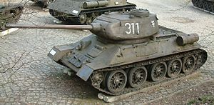

Танки времён Второй мировой войны
Танк (англ. tank) — бронированная боевая машина, чаще всего на гусеничном ходу,как правило с пушечным и дополнительным пулемётным вооружением, обычно во вращающейся полноповоротной башне, предназначенной в основном для стрельбы прямой наводкой.
Вторая мировая война подстегнула прогресс в танкостроении. Всего за шесть лет танки совершили намного больший рывок, чем за предыдущие двадцать. Значительная часть танков обзавелась противоснарядным бронированием, мощными пушками калибром до 152 мм (у КВ-2), в конце войны на немецких танках появились первые серийные ночные — инфракрасные — прицелы[36] (хотя опыты по их постановке на танк проводились в СССР ещё до войны), радиофикация танков стала считаться необходимой. Тактика применения танков тоже достигла высокой степени совершенства — в первый период войны (1939—1941 гг.) германские военачальники продемонстрировали всему миру, как применение танковых соединений позволяет провести операции по оперативному и стратегическому окружению и последующему разгрому крупных войсковых группировок противника и быстро выиграть войну (т. н. «блицкриг»).
- советские средние Т-44, Т-54 и тяжёлые танки Т-10;
- американские M46 «Паттон», M47;
- английский A41 «Центурион» и другие